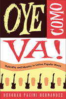

Latino music as an amalgam of American cultures
Latino music as an amalgam of American cultures


 Latino music as an amalgam of American cultures
Latino music as an amalgam of American cultures

|  |
Oye Como Va!Hybridity and Identity in Latino Popular MusicDeborah Pacini Hernandezpaper EAN: 978-1-43990-090-1 (ISBN: 1-4399-0090-6) |
"Oye Como Va! provides an incisive historical and contemporary overview of all the major popular musical genres defined as ‘Latin.’ Pacini Hernandez presents an insightful, coherent, eloquent, and engaging analysis of the hybridity of Latino musical practices, carefully documenting the ‘transnational’ musical interactions between Latinos in the United States and in their countries of origin."
—Jorge Duany, University of Puerto Rico, Río Piedras
Listen Up! When the New York-born Tito Puente composed "Oye Como Va!" in the 1960s, his popular song was called "Latin" even though it was a fusion of Afro-Cuban and New York Latino musical influences. A decade later, Carlos Santana, a Mexican immigrant, blended Puente’s tune with rock and roll, which brought it to the attention of national audiences. Like Puente and Santana, Latino/a musicians have always blended musics from their homelands with other sounds in our multicultural society, challenging ideas of what "Latin" music is or ought to be. Waves of immigrants further complicate the picture as they continue to bring their distinctive musical styles to the U.S.—from merengue and bachata to cumbia and reggaeton.
In Oye Como Va!, Deborah Pacini Hernandez traces the trajectories of various U.S. Latino musical forms in a globalizing world, examining how the blending of Latin music reflects Latino/a American lives connecting across nations. Exploring the simultaneously powerful, vexing, and stimulating relationship between hybridity, music, and identity, Oye Como Va! asserts that this potent combination is a signature of the U.S. Latino/a experience.
Excerpt available at www.temple.edu/tempress
"Deborah Pacini Hernandez’s wonderful book highlights the magnificent diversity and generative hybridity of Latino popular music. Oye Como Va! presents empirically rich and theoretically sophisticated analyses of a dazzling range of national and transnational musical genres. From her fully realized critiques of cumbia, merengue, and salsa to her explication of the hidden bilingual and bicultural histories of disco, freestyle, rock, reggaeton, hip-hop, and house, Pacini Hernandez has produced a timely, compelling, and significant book."
—George Lipsitz, author of Footsteps in the Dark
"Oye Como Va! brings Pacini Hernandez's unsurpassed expertise in Latino/a and Latin American popular music into a groundbreaking study of how issues of cultural nationalism, immigration, and transnationalism have affected its identification and marketing. The result is the most comprehensive treatment of Latino/a music to date. From bachata to rock en español to reggaeton, Pacini Hernandez discusses both the historical and most fascinating contemporary dimensions."
—Arlene Dávila, author of Latino Spin: Public Image and the Whitewashing of Race
"As the United States starts to confront its own deep-seated hybridity, Pacini Hernandez’s brilliant and groundbreaking analysis of the long-standing crossovers and fusions of Latino popular music is a sophisticated and immensely enjoyable guide to understanding the political and symbolic economies of transnational racial-cultural flows and mixtures."
—Peter Wade, University of Manchester, author of Music, Race, and Nation: Música Tropical in Colombia
"[Pacini Hernandez] brings an anthropologist's eye to the history of Latin music and the many ways it has been hybridized in America.... Best for readers interested in music as culture and those who want to understand what forces have shaped the diverse landscape of Latin hybridized musics in America and worldwide over the last 40-plus years."
—Library Journal
"Hernandez offers a thought-provoking analysis of the history and cultural issues related to Latino popular music in North America and its global dissemination through the music industry. Summing Up: Recommended."
—CHOICE
"Deborah Pacini Hernandez provides a strong transnational study of hybridity and identity in Latino popular music in the United States. Pacini Hernandez's book is timely…Oye Como Va! adds a welcome theoretical glue to the tangled stories of immigrants from Spanish speaking America and their descendants....[The book] is an important addition to the literature on Latin American music in the United States. It shows scholars new methods for tracing transnational musical flows across the Americas and the relations between immigrant groups and the record industry. More important, it provides new insights on the construct of identity in the Americas and its relationship to musical transformation."
—American Music
"Crafted in accessible language and impeccably ordered, Oye Como Va! is an ideal course book for various (inter)disciplines...Its contributions to the study of popular music are numerous. To date no other scholarly monograph has offered such a broad yet nuanced overview of Latino musical history, testifying to the ambitious nature of Pacini Hernandez's undertaking."
—The Americas
"Valuable not only for the broad stylistic range presented, the book is a very good source for everyone who does research in the field of Latin American popular music.... [A]n enriching experience."
—The Journal of Popular Music
"In Oye Como Va!, Deborah Pacini Hernandez provides an invigorating interpretation of the origins and travels of the rich mixture of sounds orienting the Latino music industry throughout the early twentieth century and leading up to the current moment. Her expansive interdisciplinary mapping of the origins and intersecting pathways of Latina/o music artists and their musical productions is both engrossingly comparative and relational in scope, making it a generative contribution to the fields of American Studies, Comparative Immigration History, Ethnic Studies, Latina/o Studies and Music and Dance Studies. Her meticulous unearthing of the racial formation and imaginaries that orient the Latina/o experience and its relationship to music raises our awareness of the truly hybrid and relational origins of Latina/o music production, distribution and reception.... This refreshing history of the hybrid multi-directional configuration of the trajectories of Latina/o music artists and musical genres, and the music industry promises to prove an invaluable source when teaching students new to the Latina/o experience.... Oye Como Va! successfully charts the challenges and generative qualities of hybridity in the world of Latino music."
—Latino Studies
"Deborah Pacini Hernandez has made valuable contributions to scholarship concerning Latin American popular music, including detailed discussions of music cultures surrounding genres such as reggaeton and bachata. In this book, she applies her meticulous eye to the wider history of Latin American (Latino) popular music in the USA… Her approach is well structured and detailed, leaving the reader with a strong impression of both the accuracy of the information presented and the author’s authority on this topic. The scope of the information provided is impressive…. Oye Como Va is an altogether insightful and impressive text that should become required reading for students and scholars of Latin American popular music."
—Ethnomusicology Forum
"To take on the task of explicating or analyzing Latin popular music presents a difficult endeavor; with the hybrid nature of the Latin music and US adaptations and appropriations, one could easily get lost in the array of musical styles, genres, artists, and record labels. Yet, in her book Oye Como Va, Deborah Pacini Hernandez provides an organized, concise, and informative overview of Latin popular music, specifically in regards to the recording industry’s relationship to Latina/o musicians and audience in the United States....[T]his text offers valuable histories and perspectives on the performance, recording, and marketing of Latin popular music."
—American Studies
Also available in e-book
Preface
1. Introduction: Hybridity, Identity, and Latino Popular Music
2. Historical Perspectives on Latinos and the Latin Music Industry
3. To Rock or Not to Rock: Cultural Nationalism and Latino Engagement with Rock ’n’ Roll
4. Turning the Tables: Musical Mixings, Border Crossings, and New Sonic Circuitries
5. New Immigrants, New Layerings: Tradition and Transnationalism in U.S. Dominican Popular Music
6. From Cumbia Colombiana to Cumbia Cosmopolatina: Roots, Routes, Race, and Mestizaje
7. Marketing Latinidad in a Global Era
Notes
Selected Bibliography
Index
 | Deborah Pacini Hernandez is a Professor of Anthropology and American Studies at Tufts University. She is the author of Bachata: A Social History of a Dominican Popular Music (Temple), and the co-editor of Reggaeton and Rockin' Las Américas: The Global Politics of Rock in Latin/o America. |
Music and Dance
Latino/a Studies
American Studies
© 2015 Temple University. All Rights Reserved. This page: http://www.temple.edu/tempress/titles/2055_reg.html.